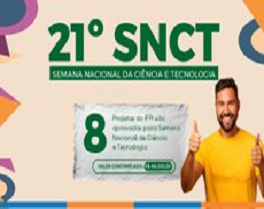

18 SET 24

IFPI aprova oito projetos para Semana Nacional de Ciência e Tecnologia
Em 2024, o tema da Semana Nacional de Ciência e Tecnologia (SNCT) será “Biomas do
Brasil: diversidade, saberes e tecnologias sociais”. O evento acontecerá de 14 a 20
de outubro de 2024 e tem o objetivo de mobilizar a população, em especial crianças e
jovens, em torno de temas e atividades de ciência e tecnologia, valorizando a
criatividade com a ideia de despertar o interesse sobre esse tema desde a infância.